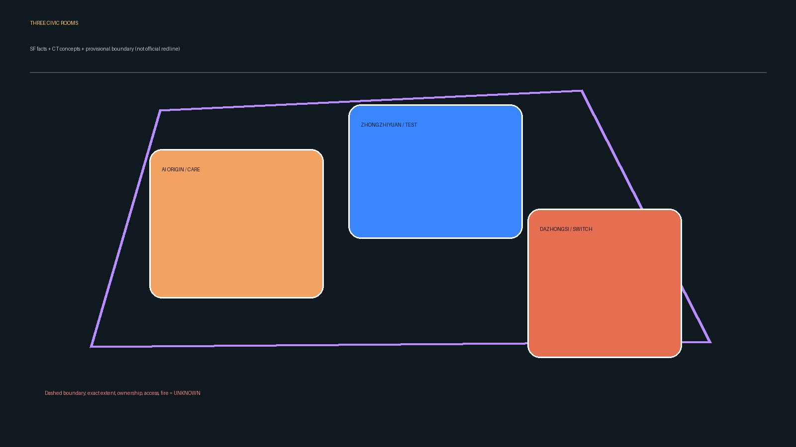
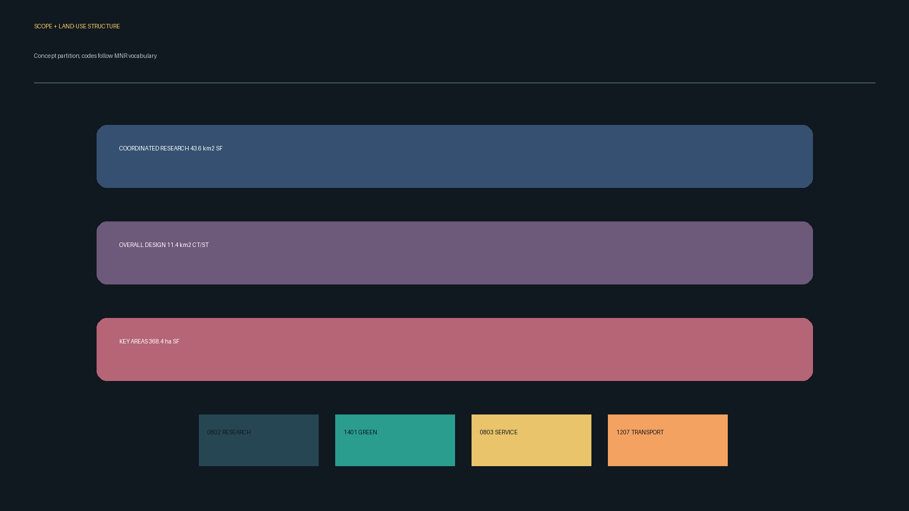
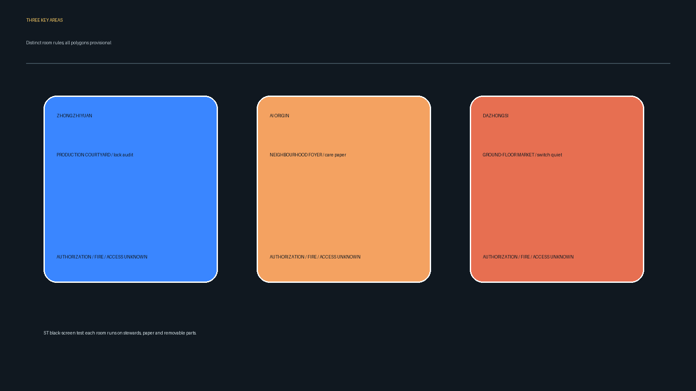
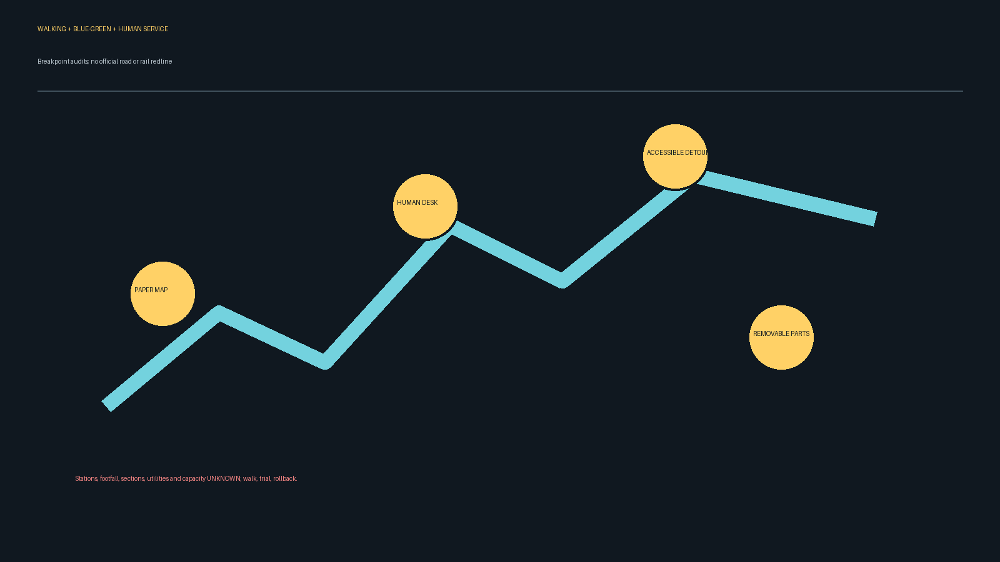
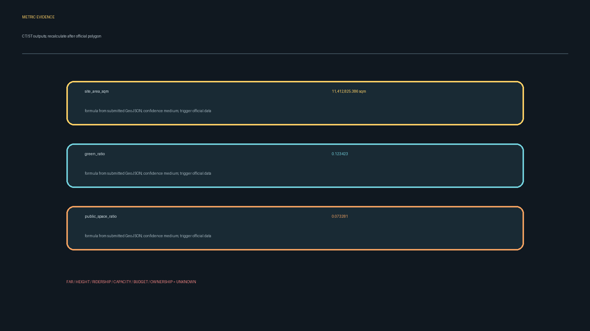

Three Civic Rooms: A Caring AI Innovation Belt
Three non-interchangeable civic rooms host research, care and ground-floor exchange; all spatial moves are concepts and the provisional boundary is discussion-only.
Three Civic Rooms: A Caring AI Innovation Belt
Design Basis and Source List
Source facts are the Haidian Branch pre-qualification announcement (Beijing Municipal Commission of Planning and Natural Resources, 2026-05-09, licence UNKNOWN, high confidence) and the Three Areas/Two Wings background page (Beijing Municipal Science and Technology Commission and Zhongguancun Science Park Administration, 2026-04-03, licence UNKNOWN, high confidence) Source Source. data/source_registry.json and data/processed/agent_fact_pack.md are absent from this checkout and recorded as UNKNOWN; the gap is not promoted to evidence.
The rough provisional polygons are maintained by the repository (2026-06-05, licence UNKNOWN, low confidence) Source. They are not official redlines, ownership or engineering boundaries. Replace them as one set and recalculate every layer and metric when cleared polygons arrive [assumption:A-CONTROLS-001]. Statuses are explicit: SF source fact, CT concept target, ST synthetic desk test, FM future field measurement, UNKNOWN.

Three-Level Scope Framework
The announcement states approximately 43.6 km² coordinated research area, 11.4 km² overall design area and 368.4 ha across three key areas (about 192.1, 104.3 and 72.0 ha). These are SF and cannot yield buildable area Standard. This package uses a provisional 11.41 km² design model in site_boundary.geojson; its area is a CT/ST recomputation, not a statutory area Metric.
The coordinated level sets industry, culture and governance principles; the overall level maps land use, green space, public space, walking and phasing; the detailed level gives each room a distinct brief. Once an official boundary is available, land use, green/public space, buildings, roads, phasing and core ratios are recalculated together.

Coordinated Research Area: Industry and Future City Research
The thesis is “care first, test second, reversible always.” Beijing AI Origin Community is a daily-service and learning foyer; Zhongzhiyuan is a lockable, auditable production courtyard; Dazhongsi is a three-state ground floor: movement, short exhibit, quiet. A synthetic black-screen test hides all connections; each room still runs its own steward, paper queue and rollback, so no continuous connector is required.
The name is “Jingzhang Three Rooms.” The logo is three separated square brackets for memory, care and production; no company marks or uncleared fonts are used. The five functions (full-stack innovation, world-class ecosystem, AI+ scenes, lively city and governance voice) are carried by events, human service and removable components Standard. The two wings are capability loans, not confirmed partnerships: a Zhongguancun technology-service wing and a Qinghe/Xiaoyuehe blue-green scenario wing.
Background examples only: Barcelona Superblocks, Helsinki Oodi, Amsterdam Marineterrein, the Toronto Sidewalk Labs debate, Seoul Digital Media City, Singapore Punggol Digital District and London Knowledge Quarter Source. Local transfer, cost, capacity and partnerships remain UNKNOWN.
Overall Design Area: Urban Renewal and Regulatory-Plan-Level Urban Design
The structure is an intermittent network of three civic rooms and blue-green nodes, not a single corridor. Each room has an independent entrance, human desk, paper map, removable furniture and an ordinary-use mode after closure. Land-use codes are expressed with checkable codes: research 0802, public green 1401, public service 0803 and roads/transport 1207 Standard Spatial data.
Transport is a break-point audit: while road/rail redlines, ridership and capacity are UNKNOWN, the proposal only sets walking-crossing, bicycle parking and low-speed shuttle measurement tasks; it does not claim new stations or road works. Qinghe/Xiaoyuehe blue-green opportunities are low-contrast concepts pending field verification Standard.
Detailed Design of Key Areas

Zhongzhiyuan AI Acceleration Area (PROV-KEY-001) — Auditable Production Courtyard. Edge forecourt, lockable test yard and human guide form three thresholds; the public never crosses into the lab. Safety sandbox, edge-compute kiosk and Qinghe low-carbon gallery are concept pilots. Management, ownership, fire controls and equipment risks are UNKNOWN; no start before written permission and professional review Spatial data.
Beijing AI Origin Community (PROV-KEY-002) — Caring Neighbourhood Foyer. Everyday access for children, older people, wheelchair users and low-digital-literacy residents comes first. Paper booking and human scheduling are the default; developer events may borrow only non-essential hours. Entrances, toilets, lighting, noise and opening hours are UNKNOWN Spatial data.
Dazhongsi AI Industry Cluster (PROV-KEY-003) — Switchable Ground Floor. With point-by-point owner permission, removable panels and seats switch a grey space between movement, short exhibit and quiet. Ownership, fire, accessibility, footfall and public status are UNKNOWN; until checked, movement remains the only state Spatial data.
The rooms are not interchangeable: Zhongzhiyuan’s safety threshold cannot move into the community; the community’s care hours cannot be displaced by display; Dazhongsi’s ground-floor switch cannot replace a research courtyard. Any cross-room borrowing records permission, steward, data term and withdrawal condition.
AI Innovation Ecosystem, Personas, and AI+ Scenarios
Five personas are design assumptions, not population facts: an older person living alone (human enquiry, paper map, phone appeal); a child with caregiver (guardian consent, no recording, visible companion point); a wheelchair user (accessible detour and low information board); a no-smartphone/low-literacy resident (pictograms, spoken help, walk-up queue); and a non-AI shift worker (handover time, rest point, right to refuse a test).
Ten cards run with a human equivalent: (1) open-source foyer, (2) safety-governance sandbox, (3) edge-compute kiosk, (4) walking-breakpoint audit, (5) international pitch lounge, (6) Qinghe low-carbon gallery, (7) near-campus transfer street, (8) data-factor salon, (9) AI daily-service sample street, and (10) global AI week route. Cards 1–3 are CT industry test/validation concepts, not verified outcomes.
AI may optionally count anonymous paper-card themes; no face recognition, identity inference, automated eligibility or continuous tracking. A human steward can stop. One serious safety, accessibility or privacy event pauses a test; ordinary complaints are reviewed against an authorised threshold. Network, power or model failure switches to paper counts, removes equipment, deletes temporary data and restores ordinary use. The on-site steward accepts in-person, phone and paper appeals and issues a receipt; response time is a CT to be confirmed.
Land Use, Building Scale, and Retain-Renovate-Demolish Strategy
land_use.geojson partitions the provisional site boundary without gaps; buildings.geojson is a concept footprint, not existing stock, ownership or permitted scale Depth. Height, storeys, FAR, total floor area, demolition and new-build decisions are UNKNOWN until official controls, survey, title, fire and engineering evidence arrive Standard. The only recommendation is “removable first, permanent later.”
Transport, Rail, Municipal Infrastructure, and Public Services

Three reversible actions are proposed: walk the entrance breakpoints, trial bicycle stands and test paper wayfinding between stations and rooms. Station names, ridership, road sections, parking, utilities, energy and compute capacity are UNKNOWN; no official redline is drawn. Human desks, phone and paper maps are the service floor; AI summaries can be switched off Standard.
Blue-Green Network, Public Space, and Urban Character
Exact Jingzhang heritage-park, Qinghe and Xiaoyuehe extents and conservation controls are UNKNOWN. Low-contrast green polygons show opportunities pending verification, not park redlines. Durable, removable, low-glare materials and bilingual wayfinding support a plural heritage narrative without uncleared imagery.
Three conceptual AI pilgrimage/honour nodes are proposed: “Century Memory Plinth” (verified records), “Open-source Contribution Wall” (voluntary names), and “Reversible Test Gate” (safety and exit log). Each needs rights, conservation, fire and management permission; exact points are UNKNOWN.
Renewal Projects, Implementation Policy, and Phasing
P0 rights clearance and field verification (FM); P1 small removable pilots in each room (CT/ST); P2 human review, appeal and deletion audit; P3 professional deepening or termination. Dependencies, implementers, budget, timing and partnerships are UNKNOWN; no pilot starts without permission. Suggested annual events—developer open day, heritage workshop, accessibility walk and safety review—are conceptual operations.
Metrics, Area Recalculation, and Compliance Matrix
Core visual metrics recomputed from this package are site_area_sqm=11412825.386 sqm, green_ratio=0.123423, and public_space_ratio=0.073281. They are CT/ST, medium confidence, and must be recalculated when official polygons arrive Metric Metric Metric. Announcement areas are SF context only. FAR, height, footfall, capacity, budget, ownership and ridership are UNKNOWN. compliance_matrix.json covers announcement 1.3/1.4/1.5 and agent.1–agent.6; the standards and depth matrices provide the professional evidence Depth.

Risk, Copyright, and Compliance
Only official public pages, the cleared taskbook and maintainer provisional geometry are used; unknown licences stay UNKNOWN. Figures are generated in this package with system fonts; no portraits, company marks, remote tiles or personal data. This is not approval, investment, construction or partnership commitment. Ownership, fire, accessibility, lighting, noise, conservation, privacy and retention require professional and authorised review Standard. See report/copyright_statement.md.
References
1. Beijing Municipal Commission of Planning and Natural Resources, Haidian Branch, Pre-qualification announcement, 2026-05-09, https://ghzrzyw.beijing.gov.cn/zhengwuxinxi/tzgg/hd/202605/t20260509_4643047.html, licence UNKNOWN. 2. Beijing Municipal Science and Technology Commission and Zhongguancun Science Park Administration, Three Areas/Two Wings, 2026-04-03, https://kw.beijing.gov.cn/xwdt/kcyx/xwdtcyfz/202604/t20260403_4573808.html, licence UNKNOWN. 3. Ministry of Housing and Urban-Rural Development, Urban Design Management Measures, 2017-03-14, https://www.mohurd.gov.cn/gongkai/zc/wjk/art/2023/art_17339_775476.html, licence UNKNOWN. 4. Ministry of Natural Resources, Land-use Classification Guide, 2023-11-22, https://www.gov.cn/zhengce/zhengceku/202311/content_6917279.htm, licence UNKNOWN. 5. Repository maintainers, provisional boundary GeoJSON, 2026-06-05, brief/site-package/geometry/provisional_boundaries.geojson, licence UNKNOWN.